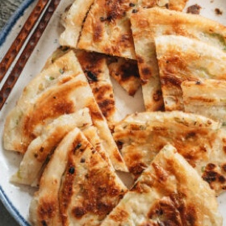

← All recipes
Chinese Scallion Pancakes (葱油饼)

Servings: Servings: 12 servings · Prep: 10 minutes · Cook: 30 minutes
Ingredients
- Dough
- 2 cups all-purpose flour
- 1/2 teaspoon salt
- 1/2 cup boiling water
- 1/4 cup cool water
- Filling
- 1/3 cup all-purpose flour
- 1/4 cup peanut oil (or your favorite oil like olive oil, melted coconut oil, melted butter, or melted chicken fat etc.)
- 3/4 teaspoon salt
- 8 green onions , split down the middle and chopped (yield 1 cup)
- Vegetable oil for pan frying
- Dipping Sauce (Optional)
- 1 1/2 tablespoon soy sauce
- 1 tablespoon Chinkiang vinegar (or rice vinegar)
- 1/4 teaspoon sugar
Directions
- Cooking scallion pancakes might look daunting at a glance. My detailed step-by-step photos will help walk you through how to prepare the dough and shape the pancakes like a pro.
- Part 1 – Prepare the dough
- If you’re making a big batch of scallion pancakes, you can use a stand mixer to make the dough. But I found it easy enough to knead the dough by hand.
- Slowly add the hot water to the flour and mix it at the same time.
- Mix until the hot water is fully absorbed
- Slowly add the cold water and continue mixing
- Dough flakes should form once all the water is added
- Start to press everything together with your hand
- You can add a bit more water if there’s too much dry flour left. Or you can slightly add a bit more flour if the dough is very sticky. Once you’ve pressed all the dough flakes together, you should have little or no dry flour left.
- Knead about 5 mins until a tough dough is formed.
- Let rest for 20 mins, then knead for 1 minute to form a smooth dough.
- Part 2 – prepare the filling
- The best way to make the scallion pancake filling is to make an oil flour paste (not simply brushing oil onto the dough). This way you can work in layers easily without pressing out the oil as you roll out the pancakes.
- To make the filling, simply mix the dry ingredients with the oil until it forms a smooth paste.
- Part 3 – Forming the scallion pancakes
- Cut the dough into 6 pieces and work on the pieces one at a time. Use your hands to shape the dough into a rectangular shape.
- Roll the dough
- The dough should form a very thin rectangle.
- Add the flour oil paste
- Spread out the paste, leaving about 1” (2.5 cm) on both a long and a short end without the filling (your top and left)
- Add the green onion, concentrating most of it towards a long and short end with the filling
- Gently roll up the dough, as tightly as possible
- Press the air bubbles out of the dough strip
- Further roll up the long dough strip
- Tuck the end on the bottom
- Gently press the tall pancake
- Let it rest while you work on the rest of the pancakes
- PS. I prefer to rest the formed pancakes for a few minutes before rolling them out, to let the gluten relax, so you can roll them out easily.
- Part 4 – Roll and cook the pancakes
- Roll out the pancakes when you’re ready to cook
- Heat up a pan with a layer of oil on the bottom, add the pancake, and wiggle the pancake a few times so it won’t stick
- Let the pancake cook covered first
- Flip the pancake and cook covered again
- Then cook uncovered, until both sides of the pancake are browned
- You can use a spatula to press the pancake, to help with even browning
- How to store scallion pancakes
- The best thing about these pancakes is that they can be stored raw or cooked.
- If you’d like to get the best fresh result, freeze the scallion pancakes raw after you roll them out. Carefully stack them with a piece of parchment paper in between, then transfer everything to a large ziplock bag. Press out as much air as possible and seal the bag. Freeze the pancakes for up to 3 months.
- To cook the frozen pancakes, simply let them thaw at room temperature for 8 minutes and cook them using the same method.
- If you cook all the pancakes and have leftovers (very unlikely!!), you can put them in a bag and store them in the fridge for a few days. You can either reheat them in the microwave or on the stovetop. Note, if you reheat a cooked pancake, it will still be quite crispy but the texture will turn a bit chewier.
- Make the dough
- OPTION 1 – USING YOUR HANDS: Combine the flour and salt in a big bowl. Stir to mix well. Slowly drizzle in the hot water while mixing it with a pair of chopsticks (or a fork), until the water is fully absorbed. Slowly drizzle in the cool water, continuing to stir until many dough flakes form. Press the dough together, and try to combine the wet dough with the dry flour. Drizzle in a little extra water if there is any dry flour remaining. Knead until a firm ball is formed, about 5 minutes. Cover and let rest for 20 minutes.
- OPTION 2 – USING A MIXER: Combine the flour and salt in the mixer bowl with the dough hook attachment. Turn it to the mix setting and slowly drizzle in the hot water followed by the cool water. After a minute of mixing, drizzling in a little extra water if there is any dry flour remaining. Turn to setting 4 and knead until a ball of dough is formed, about 3 minutes. Cover and let rest for 20 minutes.
- Make the filling
- While the dough is resting, combine the flour, oil, and salt in a small bowl. Mix until a smooth paste is formed.
- If making the dipping sauce, combine all the ingredients with 1 tablespoon of water in a small bowl and mix until the sugar is dissolved.
- Form the scallion pancakes
- When the dough is done resting, knead for another minute until it is smooth. Cut the dough into 6 even pieces, about 76 grams per piece. Form the dough into balls using your hands.
- Work on one dough ball at a time, covering the rest with plastic wrap to prevent drying out. Roll each dough ball into a thin rectangle with a rolling pin, aiming for around 6×10” (15×25 cm). Lift and turn the dough regularly as you roll it to prevent sticking. Spoon about 1 tablespoon of the filling onto the dough and spread it evenly with the back of a spoon, leaving about 1” (2.5 cm) on top and the left end without the filling. Sprinkle 2 heaping tablespoons of green onions onto the paste, concentrating most of it towards one side of the length and one side of the width, creating a loose L shape (see the blog post above for the step-by-step pictures).
- Begin rolling the dough from the longer side of the dough where the green onions are concentrated, until you have one long tube. Lightly flatten the tube using your hand. Pinch the side with more green onion to seal it. Take the sealed side and gently pull and roll it towards the unsealed side, using your hand to smooth out the dough to push any large air bubbles out. Tuck the loose end under the rolled bun. Gently press down on the round disk with your hand to seal the pancake.
- Set the formed pancake aside and cover it with plastic wrap. Repeat steps 4 and 5 until each pancake is ready.
- Roll out the pancake
- Roll each prepared pancake into a circle, about 7-8” (17-20 cm) wide. Flip and move it as you do to prevent sticking. Don’t worry if air bubbles burst through or some green onions fall out.
- If you plan to store the pancakes and cook them later, place each pancake onto a piece of parchment paper and stack them. Transfer the pancakes to a large ziplock bag, squeeze out as much air as possible, and seal the bag. You can freeze the pancakes for up to 3 months.
- Cook the pancakes
- Heat a 9” (23 cm) cast iron pan (or a nonstick skillet) over medium-high heat and add enough oil to fully coat the bottom. Once the oil is hot, add a pancake. Use a pair of chopsticks (or a spatula) to swirl the pancake around to spread the oil and prevent sticking, for a few seconds. Cover the pan and turn the heat down to medium. Let the pancake cook, covered, for 1 minute. Remove the lid and flip the pancake, cover, and cook for another minute. Remove the lid. Use a spatula to press the pancake, to ensure even browning. Continue to cook, flipping regularly, until both sides are crisp and browned, about 3 minutes. Turn to medium-low heat if the pan gets too hot. Transfer the pancake to a cooling rack or a cutting board to cool. Repeat to cook all the pancakes you plan to serve.
- Once the pancakes are slightly cooled enough to handle, cut into 6 pieces and transfer to a serving platter. Serve hot with the dipping sauce as an appetizer.
- Cook frozen pancakes
- Let the frozen pancakes thaw for 10 minutes then proceed from step 8.
- Store and reheat cooked pancakes
- Place the leftover pancakes in a ziplock bag by stacking them together. Store in the fridge up to 3 days. To reheat, add a pancake to a pan and heat over medium heat, cook, flip occasionally until the pancakes turn warm throughout.
Notes
NOTE: the photos were shot on the opposite side of the table from where the pancakes were made. If the recipe description looks upside down or confusing, check the video at the bottom of the recipe so you can get a better idea.
You can either use a cast iron skillet or a nonstick pan. Either will work. If you use a cast iron pan, you will need a generous amount of oil to prevent the pancakes from sticking.
It’s possible to use less oil to cook the pancakes. But for the best result – golden brown surface and extra crispy texture, you will need a thin layer of oil to cover the bottom of the pan (not just a few drops).
It’s important to cook the pancakes covered at first, to cook through the interior.
Original source: omnivorescookbook.com